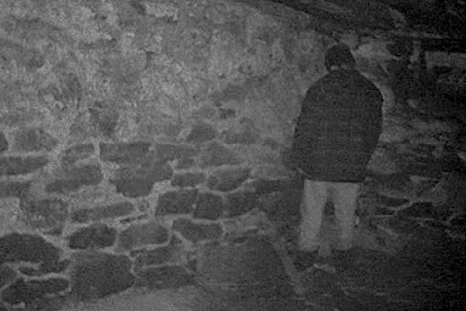

The best horror movies according to me
My top 3 horror movies of all-time
The Blair Witch Project
Creepy.
Sinister
Terrifying.
Hereditary
Disturbing.
This is a poem about The Blair Witch Project
In the woods so dark and deep,
Where whispers stir and shadows creep,
The Blair Witch waits, unseen, unknown,
A curse that chills you to the bone.
With footage found and minds undone,
A story told, but never spun,
Lost in fear, where truth may lie—
The witch still haunts the forest's cry.
